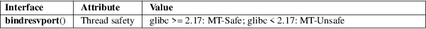

bindresvport − bind a socket to a privileged IP port
Standard C library (libc, −lc)
#include
<sys/types.h>
#include <netinet/in.h>
int bindresvport(int sockfd, struct sockaddr_in *sin);
bindresvport() is used to bind the socket referred to by the file descriptor sockfd to a privileged anonymous IP port, that is, a port number arbitrarily selected from the range 512 to 1023.
If the bind(2) performed by bindresvport() is successful, and sin is not NULL, then sin−>sin_port returns the port number actually allocated.
sin can be NULL, in which case sin−>sin_family is implicitly taken to be AF_INET. However, in this case, bindresvport() has no way to return the port number actually allocated. (This information can later be obtained using getsockname(2).)
bindresvport() returns 0 on success; otherwise −1 is returned and errno is set to indicate the error.
bindresvport() can fail for any of the same reasons as bind(2). In addition, the following errors may occur:
|
EACCES |
The calling process was not privileged (on Linux: the calling process did not have the CAP_NET_BIND_SERVICE capability in the user namespace governing its network namespace). |
EADDRINUSE
All privileged ports are in use.
EAFNOSUPPORT (EPFNOSUPPORT in glibc 2.7 and earlier)
sin is not NULL and sin−>sin_family is not AF_INET.
For an explanation of the terms used in this section, see attributes(7).

The bindresvport() function uses a static variable that was not protected by a lock before glibc 2.17, rendering the function MT-Unsafe.
Present on the BSDs, Solaris, and many other systems.
Unlike some bindresvport() implementations, the glibc implementation ignores any value that the caller supplies in sin−>sin_port.
BSD.
bind(2), getsockname(2)